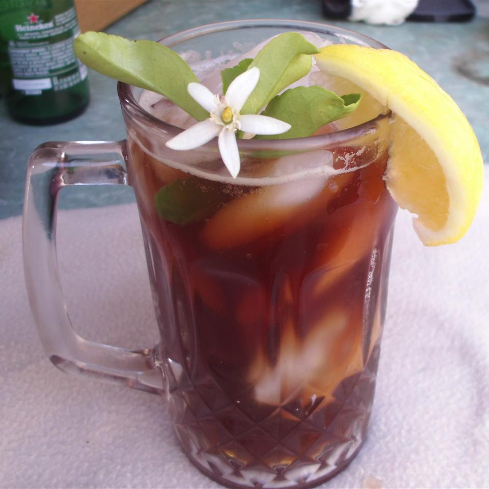

Don's Simple Sweet Tea Recipe

Tea is good.
Tea is tasty.
Ingredients:
- 8 cups water
- 4 family-sized tea bags
- 2 cups white sugar
Steps:
- Bring water to a boil in a pot. Dissolve sugar in boiling water; remove from heat.
- Steep tea bags in water to desired strength of tea, 3 to 5 minutes.
- Refrigerate tea until cold, at least 1 hour.